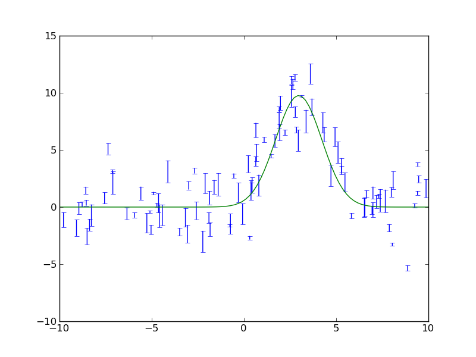

Quick tour of Python¶
In the spirit of this workshop let’s jump in to real Python analysis code. These examples assume you are using pylab (you’ll understand what that is after the 2nd hands-on session).
Making a publication quality image¶
Making a publication quality image is a snap in Python using the APLpy package. Images can be made interactively or (reproducibly) with a script. Let’s see how the cover image for today’s talk was made.
import aplpy
# Convert all images to common projection
aplpy.make_rgb_cube(['m1.fits', 'i3.fits', 'i2.fits'], 'rgb.fits')
# Make 3-color image
aplpy.make_rgb_image('rgb.fits', 'rgb.png',
vmin_r=20, vmax_r=400,
vmin_g=0, vmax_g=150,
vmin_b=-2,vmax_b=50)
# Create a new figure
fig = aplpy.FITSFigure('rgb_2d.fits')
# Show the RGB image
fig.show_rgb('rgb.png')
# Add contours
fig.show_contour('sc.fits', cmap='gist_heat', levels=[0.2,0.4,0.6,0.8,1.0])
# Overlay a grid
fig.add_grid()
fig.grid.set_alpha(0.5)
# Save image
fig.save('plot.png')
This produces the nice image:

Hello, world¶
The following is from “myfile.py”.
def hello(name="John"):
print "Hello, "+name
def array_hello(names=["Tom", "Dick", "Harry"]):
for name in names:
print "Hello, "+name
Run the functions by inside python typing
>>> import myfile
>>> myfile.hello()
>>> myfile.array_hello()
Reading text files and plotting¶
Plot the space and redshift distribution of the luminous red galaxies (LRGs) from the catalogue here: http://www.2slaq.info/2SLAQ_LRG_v5pub.cat:
import numpy as np
import matplotlib.pyplot as plt
from scipy import integrate
from math import sqrt
# Cosmological parameters needed to convert redshift to distance
H0 = 70. # Hubble parameter at z=0, km/s/Mpc
omega_m = 0.3
omega_lam = 0.7
c_kms = 299792.458 # speed of light, km/s
dH = c_kms / H0 # Hubble distance, Mpc
def inv_efunc(z):
""" Used to calculate the comoving distance to object at redshift
z. Eqn 14 from Hogg, astro-ph/9905116."""
return 1. / sqrt(omega_m * (1. + z)**3 + omega_lam)
# Read the LRG positions, magnitudes and redshifts
#
# dtype=None means the type of each column (float, integer, string)
# will be guessed.
r = np.genfromtxt('2SLAQ_LRG_v5pub.cat', dtype=None, skip_header=176,
names='name,z,rmag,RA,Dec',usecols=(0, 12, 26, 27, 28))
# Only keep objects with a redshift larger than 0.1
r = r[r['z'] > 0.1]
# Calculate the comoving distance corresponding to each object's redshift
dist = np.array([dH * integrate.quad(inv_efunc, 0, z)[0] for z in r['z']])
# Plot the distribution of LRGs, converting redshifts to positions
# assuming Hubble flow.
theta = r['RA'] * np.pi / 180 # radians
x = dist * np.cos(theta)
y = dist * np.sin(theta)
# Make the area of each circle representing an LRG position
# proportional to its apparent r-band luminosity.
sizes = 30 * 10**-((r['rmag'] - np.median(r['rmag']))/ 2.5)
fig = plt.figure()
ax = fig.add_subplot(111)
# Plot the LRGs, colouring by declination.
col = plt.scatter(x, y, marker='.', s=sizes, c=r['Dec'], faceted=0,
cmap=plt.cm.Spectral)
# Add a colourbar.
cax = fig.colorbar(col)
cax.set_label('Declination (degrees)')
plt.xlabel('Comoving Mpc')
plt.ylabel('Comoving Mpc')
plt.axis('equal')
# Now plot the redshift distribution.
zbins = np.arange(0.25, 0.9, 0.05)
fig = plt.figure()
ax = fig.add_subplot(111)
plt.hist(r['z'], bins=zbins)
plt.xlabel('LRG redshift')
# Make a second axis to plot the comoving distance
ax1 = plt.twiny(ax)
# Generate redshifts corresponding to distance tick positions;
# first get a curve giving Mpc as a function of redshift
redshifts = np.linspace(0, 2., 1000)
dist = [dH * integrate.quad(inv_efunc, 0, z)[0] for z in redshifts]
Mpcvals = np.arange(0, 4000, 500)
# Then interpolate to the redshift values at which we want ticks.
Mpcticks = np.interp(Mpcvals, dist, redshifts)
ax1.set_xticks(Mpcticks)
ax1.set_xticklabels([str(v) for v in Mpcvals])
# Make both axes have the same start and end point.
ax1.set_xlim(*ax.get_xlim())
ax1.set_xlabel('Comoving distance (Mpc)')
plt.show()
The images produced are:


Making a fancy plot from Monte-Carlo samples¶
Assume you have run an MCMC and you are left with two arrays X,Y of MCMC samples of two fit parameters. You now want to use X,Y to visualise the likelihood manifold. You can do that (a) as a simple scatter plot or (b) in a more fancy way:
import numpy,math
import pylab
# Create artificial data mimicking some MCMC results.
N = 50000
X = numpy.random.normal(0.0, 1.5, N) # Normal distribution
Y = numpy.random.gamma(2.0, 2.0, N) # Gamma distribution
# Define plot ranges once, for multiple usage later (e.g. more than a single subplot).
XRANGE = [-6.4,6.4]
YRANGE = [-2.4,11.4]
# Define figure size and formatting
fig = pylab.figure(1, figsize=(16,7.5))
fig.subplots_adjust(wspace=0.2, left=0.04, bottom=0.07, top=0.99, right=0.99)
# Two subplots next to each other. Start with left subplot.
pylab.subplot(121)
# Simply plot X vs. Y as data points.
pylab.plot(X, Y, 'o', ms=4, alpha=0.1, color='blue')
pylab.xlim(XRANGE)
pylab.ylim(YRANGE)
pylab.xticks(fontsize=16)
pylab.yticks(fontsize=16)
pylab.xlabel(r'$x$', fontsize=24)
pylab.ylabel(r'$y$', fontsize=24)
# Next, make right subplot.
pylab.subplot(122)
# Convert to 2d histogram.
B = 25
hist2D = numpy.histogram2d(X, Y, bins=[B,B], range=[XRANGE,YRANGE], normed=False)[0]
# Plot Monte-Carlo samples as 2D histogram.
# Beware: imshow switches axes, so switch back.
hist2D = numpy.transpose(hist2D)
pylab.imshow(hist2D, cmap=pylab.cm.gray, interpolation='gaussian')
# Overplot with error contours 1,2,3 sigma.
maximum = numpy.max(hist2D)
# Infering correct levels of 1,2,3 sigma would require some further code,
# so let's fake it by setting the three levels to some guessed values.
[L1,L2,L3] = [0.5*maximum,0.25*maximum,0.125*maximum]
#print [L1,L2,L3]
cs = pylab.contour(hist2D, levels=[L1,L2,L3], linestyles=['--','--','--'], colors=['orange','orange','orange'], linewidths=1)
# use dictionary in order to assign my own labels to the contours.
fmtdict = {L1:r'$1\sigma$',L2:r'$2\sigma$',L3:r'$3\sigma$'}
pylab.clabel(cs, fmt=fmtdict, inline=True, fontsize=20)
# Also plot marginal likelihoods.
S = 101
I = []
# Bin X,Y separately. As 1D bin, can use more bins now.
LX = numpy.histogram(X, bins=S, range=XRANGE, normed=True)[0]
LY = numpy.histogram(Y, bins=S, range=YRANGE, normed=True)[0]
# Rescale by maxima. Don't want this histogram to span whole subplot.
rescale_X = 0.15*float(B)/numpy.max(LX)
rescale_Y = 0.15*float(B)/numpy.max(LY)
for s in range(S):
I.append(float(s)*float(B)/float(S))
LX[s] = LX[s]*rescale_X
LY[s] = LY[s]*rescale_Y
pylab.plot(I, LX, '-', lw=3, color='white')
pylab.plot(LY, I, '-', lw=3, color='white')
pylab.xlim(0,B-1)
pylab.ylim(0,B-1)
# Sadly, through binning numpy looses the position information, so we need to restore it manually
# in order to plot proper axes ticks.
T = []
L = []
for x in -6,-4,-2,0,2,4,6:
index = (x-XRANGE[0])*float(B-1)/(XRANGE[1] - XRANGE[0])
T.append(index)
L.append(x)
pylab.xticks(T, L, fontsize=16)
T = []
L = []
for y in -2,0,2,4,6,8,10:
index = (y-YRANGE[0])*float(B-1)/(YRANGE[1] - YRANGE[0])
T.append(index)
L.append(y)
pylab.yticks(T, L, fontsize=16)
pylab.xlabel(r'$x$', fontsize=24)
pylab.ylabel(r'$y$', fontsize=24)
pylab.savefig('plot_MCMC_samples.png') # Save figure as png-file.
pylab.show()

Parallel process of FITS images¶
import glob
import multiprocessing
import pyfits
from scipy.ndimage import gaussian_filter
# Define a function to run on files
def smooth(filename):
# Read in FITS file
hdulist = pyfits.open(filename)
# Convolve the data in the primary HDU
hdulist[0].data = gaussian_filter(hdulist[0].data, 3)
# Write out the result to a new file
hdulist.writeto(filename.replace('.fits', '_smooth.fits'))
# Search for all FITS files
files = glob.glob('files/*.fits')
# Define a 'pool' of 16 processors
p = multiprocessing.Pool(processes=16)
# Run the function over all files in parallel
ap.map(smooth, files)
Reading a table and plotting with asciitable¶
The Fermi Gamma-ray satellite has a nice catalog of AGN available through HEASARC. The script below will read in the catalog data using the asciitable module, do some basic filtering with NumPy, and make a couple of plots with matplotlib
import asciitable # Make external package available
# Read table.
# ==> dat[column_name] and dat[row_number] both valid <==
dat = asciitable.read('fermi_agn.dat')
redshift = dat['redshift'] # array of values from 'redshift' column
flux = dat['photon_flux']
gamma = dat['spectral_index']
# Select rows that have a measured redshift
with_z = (redshift != -999)
figure(1)
semilogx(flux, gamma, '.b', label='All') # First plot!
semilogx(flux[with_z], gamma[with_z], 'or', label='With Z')
legend(numpoints=1)
grid()
xlabel('Flux (photon/cm$^2$/s)') # latex works
ylabel('Spectral index $\Gamma$')
# Select low- and high-z samples
lowz = with_z & (redshift < 0.8)
highz = with_z & (redshift >= 0.8)
figure(2)
bins = arange(1.2, 3.0, 0.1) # values from 1.2 to 3.0 by 0.1
hist(gamma[lowz], bins, color='b', alpha=0.5, label='z < 0.8')
hist(gamma[highz], bins, color='r', alpha=0.5, label='z > 0.8')
xlabel('Spectral index $\Gamma$')
title('$\Gamma$ for low-z and high-z samples')
legend(loc='upper left')
asciitable.write(dat[with_z], 'fermi_agn_with_z.dat')


Curve fitting with SciPy¶
SciPy provides curve_fit, a simple and useful implementation of the Levenburg-Marquardt non-linear minimization algorithm. This example shows a code to generate a fake dataset and then fit with a gaussian, returning the covariance matrix for parameter uncertainties.
from scipy.optimize import curve_fit
# Create a function
# ==> First encounter with *whitespace* in Python <==
def gaussian(x, a, b, c):
val = a * exp(-(x - b)**2 / c**2)
return val
# Generate fake data.
# Note: functions in random package, array arithmetic (exp)
n = 100
x = random.uniform(-10., 10., n)
y = exp(-(x - 3.)**2 / 4) * 10. + random.normal(0., 2., n)
e = random.uniform(0.1, 1., n)
# Fit
popt, pcov = curve_fit(gaussian, x, y, sigma=e)
# Print results
print "Scale = %.3f +/- %.3f" % (popt[0], sqrt(pcov[0, 0]))
print "Offset = %.3f +/- %.3f" % (popt[1], sqrt(pcov[1, 1]))
print "Sigma = %.3f +/- %.3f" % (popt[2], sqrt(pcov[2, 2]))
# Plot data
errorbar(x, y, yerr=e, linewidth=1, color='black', fmt=None)
# Plot model
xm = linspace(-10., 10., 100) # 100 evenly spaced points
plot(xm, gaussian(xm, popt[0], popt[1], popt[2]))
# Save figure
savefig('fit.png')
The plotted fit result is as shown below:
{kind=link}
Intermission: NumPy, Matplotlib, and SciPy¶
These three packages are the workhorses of scientific Python.
- NumPy is the fundamental package for scientific computing in Python [NumPy Reference]
- Matplotlib is one of many plotting packages. Started as a Matlab clone.
- SciPy is a collection of mathematical algorithms and convenience functions [SciPy Reference]
Synthetic images¶
This example demonstrates how to create a synthetic image of a cluster, including convolution with a Gaussian filter and the addition of noise.
import pyfits
from scipy.ndimage import gaussian_filter
# Create empty image
nx, ny = 512, 512
image = zeros((ny, nx))
# Set number of stars
n = 10000
# Generate random positions
r = random.random(n) * nx
theta = random.uniform(0., 2. * pi, n)
# Generate random fluxes
f = random.random(n) ** 2
# Compute position
x = nx / 2 + r * cos(theta)
y = ny / 2 + r * sin(theta)
# Add stars to image
# ==> First for loop and if statement <==
for i in range(n):
if x[i] >= 0 and x[i] < nx and y[i] >= 0 and y[i] < ny:
image[y[i], x[i]] += f[i]
# Convolve with a gaussian
image = gaussian_filter(image, 1)
# Add noise
image += random.normal(3., 0.01, image.shape)
# Write out to FITS image
pyfits.writeto('cluster.fits', image, clobber=True)
The simulated cluster image is below:

Running existing compiled codes¶
In addition to just doing computations and plotting, Python is great for gluing together other codes and doing system type tasks.
import os
import asciitable
smoothing = 30 # Smoothing window length
freqs = [2, 4] # Frequency values for making data
noises = [1, 5] # Noise amplitude inputs
figure(1)
clf()
# Loop over freq and noise values, running standalone code to create noisy data
# and smooth it. Get the data back into Python and plot.
plot_num = 1
for freq in freqs:
for noise in noises:
# Run the compiled code "make_data" to make data as a list of x, y, y_smooth
cmd = 'make_data %s %s %s' % (freq, noise, smoothing)
print 'Running', cmd
out = os.popen(cmd).read()
# out now contains the output from <cmd> as a single string
# Write the output to a file
filename = 'data_%s_%s' % (freq, noise)
open(filename, 'w').write(out)
# Parse the output string as a table
dat = asciitable.read(out)
# Make a plot
subplot(2, 2, plot_num)
plot(dat['x'], dat['y'])
plot(dat['x'], dat['y_smooth'], linewidth=3, color='r')
plot_num += 1
{kind=link}
And much much more...¶
- Fast access to big (1e9 rows) tables with PyTables + HDF5
- 3-d plotting and surface rendering with Mayavi
- Sophisticated data modeling with advanced statistics with Sherpa
- Query VO tables and broadcast or retrieve tables to VO applications like TOPCAT.
- GUI application to quickly view thousands of X-ray survey image cutouts
- Python-based web site for browsing a complex multi-wavelength survey
- Thermal modeling of the Chandra X-ray satellite
- Interactive multi-user plots accessed through a web browser (!)
- Distributed computing with MPI for Python
- Make a little video distribution web site